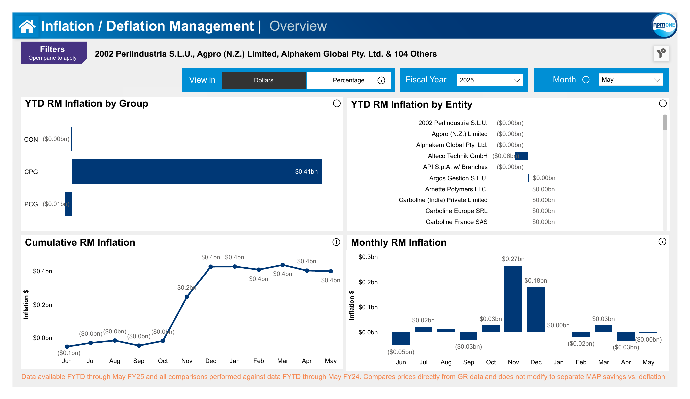

Business Problem
Finance stakeholders needed a centralized reporting solution to understand inflation and deflation impact across entities, materials, and fiscal periods.

Inflation Overview
Executive view of monthly and cumulative inflation trends by entity and business group.
Solution
Developed a Power BI dashboard that consolidated inflation performance, spend analysis, and pricing variance tracking into a single reporting platform.
Key Features
- Inflation and deflation tracking
- Business group level reporting
- Entity level drilldowns
- Material level cost analysis
- Price versus COGS investigation
- YTD inflation trend analysis
- DAX-driven KPI calculations
Business Impact
Enabled finance teams to quickly identify inflation drivers, investigate material cost changes, and support business reviews with data-driven insights.